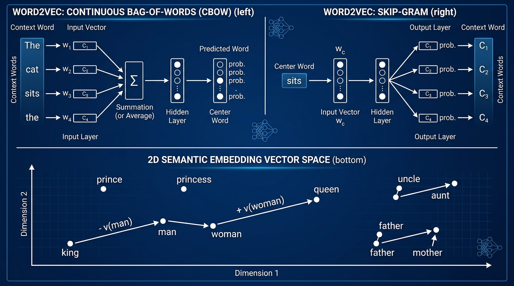

"You shall know a word by the company it keeps."
— John Rupert Firth, 1957
Computers do not process human thoughts or linguistic tokens natively; they perform linear algebra on floating-point vectors and tensors. The central question of Natural Language Processing (NLP) has always been: How do we project discrete, arbitrary human symbols into continuous mathematical spaces such that geometric distance reflects semantic similarity?
The simplest representation maps each word in a vocabulary $V$ of size $|V|$ to a standard basis vector $\mathbf{e}_i \in \mathbb{R}^{|V|}$, where a single coordinate is $1$ and all other $|V|-1$ coordinates are $0$:
$$\mathbf{x}_{\text{king}} = [1, 0, 0, \dots, 0]^\top, \quad \mathbf{x}_{\text{queen}} = [0, 1, 0, \dots, 0]^\top, \quad \mathbf{x}_{\text{apple}} = [0, 0, 1, \dots, 0]^\top$$While intuitive, one-hot encodings suffer from two fatal mathematical pathologies:
The next evolutionary step counted word occurrences across documents. A document $d$ is represented by a term frequency vector $\mathbf{c}_d \in \mathbb{R}^{|V|}$. To downweight ubiquitously common words ("the", "is", "at") while elevating discriminative keywords, the Term Frequency-Inverse Document Frequency (TF-IDF) formulation was developed:
$$\text{TF}(t, d) = \frac{f_{t,d}}{\sum_{t' \in d} f_{t',d}}, \quad \text{IDF}(t, D) = \log\left( \frac{1 + |D|}{1 + |\{d \in D : t \in d\}|} \right) + 1$$ $$\text{TF-IDF}(t, d, D) = \text{TF}(t, d) \times \text{IDF}(t, D)$$While TF-IDF enabled search engines (BM25, Chapter 5.3), it preserves zero word order and treats synonyms as unrelated axes: "cardiac arrest" and "heart attack" share zero overlap in TF-IDF space.
In 1957, linguist J.R. Firth stated the foundational principle of computational semantics: "You shall know a word by the company it keeps." Words that occur in similar contexts share semantic meaning. If the words "latte", "espresso", and "cappuccino" consistently appear next to "drink", "cup", "steamed", and "caffeine", their vector representations should be mathematically clustered together.
Instead of high-dimensional sparse vectors, we seek a mapping to a dense vector space $\mathbb{R}^d$ where $d \ll |V|$ (typically $d \in [100, 768]$):
$$E: V \to \mathbb{R}^d, \quad w \mapsto \mathbf{v}_w$$In this space, semantic similarity is directly computed via cosine similarity:
$$\text{sim}(u, v) = \frac{\mathbf{v}_u^\top \mathbf{v}_v}{\|\mathbf{v}_u\|_2 \|\mathbf{v}_v\|_2} \in [-1, 1]$$
Figure 4.7.1: Top Left: Continuous Bag-of-Words (CBOW) predicts the center word from surrounding context words. Top Right: Skip-Gram predicts context words given the center word. Bottom: Linear semantic regularities in the learned vector space ($\mathbf{v}_{\text{king}} - \mathbf{v}_{\text{man}} + \mathbf{v}_{\text{woman}} \approx \mathbf{v}_{\text{queen}}$).
In 2013, Tomas Mikolov and colleagues at Google published two neural architectures that transformed AI: Continuous Bag-of-Words (CBOW) and Skip-Gram. Rather than training a deep multi-layer network, Word2Vec discarded hidden non-linearities entirely, training a single projection matrix directly on text corpora with unprecedented efficiency.
Given a sequence of words $(w_1, w_2, \dots, w_T)$ and a context window of radius $C$, CBOW uses the $2C$ surrounding context words $w_{t-C}, \dots, w_{t-1}, w_{t+1}, \dots, w_{t+C}$ to predict the target center word $w_t$.
Let $W \in \mathbb{R}^{d \times |V|}$ be the input embedding matrix, and $W' \in \mathbb{R}^{|V| \times d}$ be the output embedding matrix. For context words $\{w_{t+j}\}_{j=-C, j \ne 0}^C$, the hidden representation is the average of their input vectors:
$$\mathbf{h} = \frac{1}{2C} \sum_{-C \le j \le C, j \ne 0} \mathbf{v}_{w_{t+j}} = \frac{1}{2C} \sum_{-C \le j \le C, j \ne 0} W_{*, w_{t+j}}$$The score for candidate target word $w$ is the inner product $\mathbf{z}_w = \mathbf{v}'_w{}^\top \mathbf{h}$, and the conditional probability is computed via Softmax:
$$P(w_t = w | \text{context}) = \frac{\exp(\mathbf{v}'_w{}^\top \mathbf{h})}{\sum_{k=1}^{|V|} \exp(\mathbf{v}'_k{}^\top \mathbf{h})}$$CBOW acts as an averaging smoother, making it exceptionally fast to train and effective for frequent vocabulary tokens.
Skip-Gram flips the objective: given the center word $w_t$, it predicts each surrounding context word $w_{t+j}$ for $-C \le j \le C, j \ne 0$. The objective is to maximize the average log probability across the corpus:
$$\mathcal{L}(\theta) = \frac{1}{T} \sum_{t=1}^{T} \sum_{-C \le j \le C, j \ne 0} \log P(w_{t+j} | w_t)$$Assuming conditional independence of context words given the center word, the probability of context word $w_O$ given center word $w_I$ is:
$$P(w_O | w_I) = \frac{\exp\left( {\mathbf{v}'_{w_O}}^\top \mathbf{v}_{w_I} \right)}{\sum_{w=1}^{|V|} \exp\left( {\mathbf{v}'_w}^\top \mathbf{v}_{w_I} \right)}$$The Computational Bottleneck — Softmax over $|V|$:
Notice the denominator: $\sum_{w=1}^{|V|} \exp\left( {\mathbf{v}'_w}^\top \mathbf{v}_{w_I} \right)$. To compute the gradient for a single word pair, the model must compute $|V|$ dot products and exponentiations. With $|V| = 200,000$ and $T = 10^9$ words, a single epoch requires $\approx 2 \times 10^{14}$ floating point operations solely on the partition function denominator. This renders naive Softmax impossible at scale.
Mikolov et al. resolved the partition function bottleneck by replacing multi-class classification with a set of independent binary logistic regressions, an algorithm known as Noise Contrastive Estimation (NCE) or Negative Sampling (NEG).
For each true center-context pair $(w_I, w_O) \in \mathcal{D}$ (labeled $y=1$), we sample $k$ "noise" words $w_{n_1}, \dots, w_{n_k}$ from a background noise distribution $P_n(w)$ (labeled $y=0$). The objective maximizes the probability that true pairs came from the data while minimizing the probability that noise words came from the data:
$$\mathcal{L}_{\text{SGNS}}(\mathbf{v}, \mathbf{v}') = \sum_{(w_I, w_O) \in \mathcal{D}} \left[ \log \sigma\left( {\mathbf{v}'_{w_O}}^\top \mathbf{v}_{w_I} \right) + \sum_{i=1}^{k} \mathbb{E}_{w_{n_i} \sim P_n(w)} \left[ \log \sigma\left( -{\mathbf{v}'_{w_{n_i}}}^\top \mathbf{v}_{w_I} \right) \right] \right]$$where $\sigma(z) = \frac{1}{1 + e^{-z}}$ is the sigmoid function. Using the identity $\sigma(-z) = 1 - \sigma(z)$, this drives the dot product of true co-occurring words toward $+\infty$ and noise words toward $-\infty$.
Let $z = {\mathbf{v}'_{w_O}}^\top \mathbf{v}_{w_I}$. Note that $\frac{d}{dz} \log \sigma(z) = 1 - \sigma(z)$, and $\frac{d}{dz} \log \sigma(-z) = -\sigma(z)$. Computing the partial derivatives with respect to the input vector $\mathbf{v}_{w_I}$:
$$\frac{\partial \mathcal{L}}{\partial \mathbf{v}_{w_I}} = \left( 1 - \sigma({\mathbf{v}'_{w_O}}^\top \mathbf{v}_{w_I}) \right) \mathbf{v}'_{w_O} - \sum_{i=1}^k \sigma({\mathbf{v}'_{w_{n_i}}}^\top \mathbf{v}_{w_I}) \mathbf{v}'_{w_{n_i}}$$And with respect to the true context vector $\mathbf{v}'_{w_O}$ and negative context vector $\mathbf{v}'_{w_{n_i}}$:
$$\frac{\partial \mathcal{L}}{\partial \mathbf{v}'_{w_O}} = \left( 1 - \sigma({\mathbf{v}'_{w_O}}^\top \mathbf{v}_{w_I}) \right) \mathbf{v}_{w_I}$$ $$\frac{\partial \mathcal{L}}{\partial \mathbf{v}'_{w_{n_i}}} = -\sigma({\mathbf{v}'_{w_{n_i}}}^\top \mathbf{v}_{w_I}) \mathbf{v}_{w_I}$$Each update now costs only $\mathcal{O}(k \cdot d)$ floating point operations instead of $\mathcal{O}(|V| \cdot d)$! With $k \in [5, 20]$, this yields a 10,000x speedup.
The Magic $\frac{3}{4}$ Power Unigram Distribution:
How do we choose the noise distribution $P_n(w)$? If we sample purely uniformly, rare words dominate and the model never learns to distinguish common words. If we sample proportional to raw corpus frequency $U(w)$, ultra-frequent stop words ("the", "of", "and") dominate every negative sample. Mikolov discovered empirically that raising the unigram frequency to the $\frac{3}{4}$ power strikes the optimal balance:
$$P_n(w) = \frac{U(w)^{0.75}}{\sum_{w' \in V} U(w')^{0.75}}$$
For a word with frequency $10^{-6}$, $U(w)^{0.75} \approx 3.16 \times 10^{-5}$ — boosting its sampling probability by over 30x relative to common words!
While Word2Vec scans local sliding windows via online SGD, Stanford researchers argued that it fails to exploit the vast statistical information residing in global corpus co-occurrence statistics. They introduced GloVe (Global Vectors), which unifies global matrix factorization (like LSA) and local context window modeling.
Let $X_{ij}$ count the number of times word $j$ appears in the context of word $i$. Let $X_i = \sum_k X_{ik}$ be the total occurrences of word $i$. The conditional co-occurrence probability is $P_{ij} = P(j|i) = \frac{X_{ij}}{X_i}$.
Consider two probe words $i = \text{"ice"}$ and $j = \text{"steam"}$. For a context word $k = \text{"solid"}$, we expect $P(\text{solid}|\text{ice})$ to be high and $P(\text{solid}|\text{steam})$ to be low, yielding a large ratio $\frac{P_{ik}}{P_{jk}} \gg 1$. For $k = \text{"gas"}$, the ratio is $\ll 1$. For irrelevant words like $k = \text{"water"}$ or $k = \text{"fashion"}$, the ratio is close to $1$.
Pennington et al. showed that to preserve this ratio in vector space, the dot product of word vectors must equal the logarithm of their co-occurrence counts:
$$\mathbf{w}_i^\top \tilde{\mathbf{w}}_j + b_i + \tilde{b}_j = \log X_{ij}$$This yields the GloVe Weighted Least Squares Objective:
$$J = \sum_{i,j=1}^{|V|} f(X_{ij}) \left( \mathbf{w}_i^\top \tilde{\mathbf{w}}_j + b_i + \tilde{b}_j - \log X_{ij} \right)^2$$where $f(X_{ij})$ is a non-decreasing weighting function designed to prevent rare co-occurrences and ultra-frequent co-occurrences from dominating the loss:
$$f(x) = \begin{cases} \left( \frac{x}{x_{\max}} \right)^\alpha & \text{if } x < x_{\max} \\ 1 & \text{otherwise} \end{cases}$$Typically, $x_{\max} = 100$ and $\alpha = 0.75$. GloVe trains via AdaGrad on the non-zero cells of the co-occurrence matrix $X$, yielding remarkably stable and robust representations.
Both Word2Vec and GloVe assign a single atomic vector to each vocabulary word. This introduces two serious limitations:
<UNK> token.Facebook AI Research (FAIR) introduced FastText, representing each word $w$ as a bag of character $n$-grams bounded by special boundary symbols < and >.
For example, for the word "where" with $n=3$:
The vector for word $w$ is the sum of its character $n$-gram vectors:
$$\mathbf{v}_w = \sum_{g \in \mathcal{G}_w} \mathbf{z}_g$$If an unseen word "untranslatability" appears at test time, FastText decomposes it into subword $n$-grams ("un", "trans", "lat", "abil", "ity") and computes a rich, meaningful embedding vector even though the full token never existed in the training set!
While FastText used character $n$-grams to enrich word embeddings, modern Large Language Models (LLMs like GPT-4, LLaMA, and Claude) require a discrete vocabulary of subwords rather than full words or individual characters. The industry standard that bridged this divide is Byte-Pair Encoding (BPE) (Sennrich et al., 2016; Radford et al., 2019).
BPE constructs its vocabulary bottom-up via iterative statistical merging:
</w>). The initial vocabulary $V_0$ consists solely of unique base characters.In modern production architectures (GPT-2, GPT-4), Byte-level BPE (BBPE) operates directly on raw UTF-8 bytes ($256$ initial tokens). This completely eliminates out-of-vocabulary tokens across all languages, emojis, and binary code without any character normalization or replacement!
Despite their brilliance, Word2Vec, GloVe, and FastText belong to the family of static word embeddings: each unique token string $w$ has exactly one fixed vector $\mathbf{v}_w$ in memory.
The Polysemy Dilemma:
Consider the word "apple" in two sentences:
Sentence A: "The farmer harvested a crisp, organic apple from the orchard."
Sentence B: "Apple reported record quarterly revenue driven by iPhone and cloud services."
In static embeddings, $\mathbf{v}_{\text{apple}}$ must occupy a single point in space. It ends up being the vector average of fruit-concepts and tech-corporate concepts:
$$\mathbf{v}_{\text{apple}} \approx 0.5 \, \mathbf{v}_{\text{fruit}} + 0.5 \, \mathbf{v}_{\text{corporation}}$$
In Sentence A, the vector incorrectly brings along corporate connotations; in Sentence B, it brings along botanical connotations! Words have polysemy: meaning is fluid, dynamic, and strictly conditioned on context.
This fundamental breakdown catalyzed the revolution from static embeddings to contextualized representations: first ELMo (Peters et al., 2018) via bidirectional LSTMs, and ultimately BERT and the Transformer (Vaswani et al., 2017; Devlin et al., 2018), where a word's vector $\mathbf{h}_t = f(x_t | x_1, \dots, x_T)$ is dynamically recomputed as a weighted attention sum over its surrounding sentence (the subject of Part 5).
Meta / Google Interview Question:
"Derive the negative sampling loss function from first principles using maximum likelihood estimation on a latent bipartite graph. Then implement a fully vectorized PyTorch module for Word2Vec Skip-Gram with Negative Sampling that performs the forward loss calculation with zero Python loops over context or negative samples."
Below is a production-grade, fully vectorized PyTorch implementation of Word2Vec with Negative Sampling, complete with unigram table construction, batch tensor contractions via torch.bmm, and vector arithmetic verification.
import torch
import torch.nn as nn
import torch.nn.functional as F
import numpy as np
class SkipGramNegativeSampling(nn.Module):
"""
Production-grade Word2Vec Skip-Gram with Negative Sampling (SGNS).
Implements vectorized forward loss using batch matrix multiplication (bmm).
"""
def __init__(self, vocab_size: int, embed_dim: int, padding_idx: int = 0):
super().__init__()
self.vocab_size = vocab_size
self.embed_dim = embed_dim
# Target (input) word embeddings: v_w
self.in_embed = nn.Embedding(vocab_size, embed_dim, padding_idx=padding_idx)
# Context (output) word embeddings: v'_w
self.out_embed = nn.Embedding(vocab_size, embed_dim, padding_idx=padding_idx)
# Initialize weights with Xavier uniform scaled for embeddings
nn.init.uniform_(self.in_embed.weight, -0.5 / embed_dim, 0.5 / embed_dim)
nn.init.zeros_(self.out_embed.weight)
def forward(self, center_words: torch.Tensor, target_words: torch.Tensor,
neg_words: torch.Tensor) -> torch.Tensor:
"""
Args:
center_words: Tensor of shape (batch_size,)
target_words: Tensor of shape (batch_size,) - true co-occurring context words
neg_words: Tensor of shape (batch_size, num_negatives) - noise words
Returns:
Scalar loss tensor
"""
# Shape: (batch_size, embed_dim)
v_center = self.in_embed(center_words)
# Shape: (batch_size, embed_dim)
v_target = self.out_embed(target_words)
# Shape: (batch_size, num_negatives, embed_dim)
v_neg = self.out_embed(neg_words)
# --- Positive Pair Score: log sigma(v'_target^T v_center) ---
# Element-wise dot product: (batch_size,)
pos_dot = torch.sum(v_center * v_target, dim=1)
pos_loss = F.logsigmoid(pos_dot)
# --- Negative Pairs Score: sum_i log sigma(-v'_neg_i^T v_center) ---
# Vectorized via batch matrix multiplication:
# (batch_size, num_negatives, embed_dim) x (batch_size, embed_dim, 1)
# -> (batch_size, num_negatives, 1) -> (batch_size, num_negatives)
neg_dot = torch.bmm(v_neg, v_center.unsqueeze(2)).squeeze(2)
neg_loss = torch.sum(F.logsigmoid(-neg_dot), dim=1)
# Overall objective: maximize pos_loss + neg_loss ==> minimize negative
total_loss = -torch.mean(pos_loss + neg_loss)
return total_loss
def get_embeddings(self) -> torch.Tensor:
"""Standard practice: add or average in_embed and out_embed weights."""
return (self.in_embed.weight.data + self.out_embed.weight.data) / 2.0
class UnigramNoiseSampler:
"""Efficient alias-table or multinomial table for 3/4 unigram sampling."""
def __init__(self, word_counts: np.ndarray, power: float = 0.75, table_size: int = 1_000_000):
# Raise frequencies to power
powered = np.power(word_counts, power)
norm_probs = powered / np.sum(powered)
# Build cumulative lookup table for O(1) sampling
cumulative = np.cumsum(norm_probs)
self.table = np.zeros(table_size, dtype=np.int32)
cur_word = 0
for i in range(table_size):
r = (i + 1) / table_size
while cur_word < len(word_counts) - 1 and r > cumulative[cur_word]:
cur_word += 1
self.table[i] = cur_word
def sample(self, batch_size: int, num_negatives: int) -> torch.Tensor:
indices = np.random.randint(0, len(self.table), size=(batch_size, num_negatives))
return torch.from_numpy(self.table[indices]).long()
# --- Unit Test & Semantic Verification ---
if __name__ == "__main__":
torch.manual_seed(42)
np.random.seed(42)
vocab_size = 5000
embed_dim = 64
batch_size = 32
num_neg = 5
model = SkipGramNegativeSampling(vocab_size=vocab_size, embed_dim=embed_dim)
# Simulate dummy training batch
centers = torch.randint(1, vocab_size, (batch_size,))
targets = torch.randint(1, vocab_size, (batch_size,))
# Simulate word frequencies following Zipf's law: f(r) ~ 1/r
ranks = np.arange(1, vocab_size + 1)
zipf_counts = 100_000.0 / ranks
sampler = UnigramNoiseSampler(zipf_counts, power=0.75)
negs = sampler.sample(batch_size, num_neg)
optimizer = torch.optim.AdamW(model.parameters(), lr=0.01)
# Verify gradient flow
optimizer.zero_grad()
loss = model(centers, targets, negs)
loss.backward()
optimizer.step()
print(f"[Word2Vec SGNS Unit Test] Batch Loss: {loss.item():.4f}")
assert not torch.isnan(loss), "Loss computed as NaN!"
assert model.in_embed.weight.grad is not None, "Gradients not computed!"
print("[SUCCESS] Vectorized SGNS Module Verified.")
Hands-on Capstone: Semantic Vector Arithmetic
Once word vectors are trained, semantic relationships emerge as regular geometric translations. The classic Mikolov vector offset tests the equation:
For example: $\mathbf{v}_{\text{king}} - \mathbf{v}_{\text{man}} + \mathbf{v}_{\text{woman}} \approx \mathbf{v}_{\text{queen}}$. Below is the evaluation routine for analogy benchmarks:
def solve_analogy(a: str, b: str, c: str, word2idx: dict, idx2word: dict,
embeddings: torch.Tensor, top_k: int = 3) -> list:
"""
Solves analogies of the form: a is to b as c is to ?
e.g., 'man' : 'king' :: 'woman' : 'queen'
"""
# Normalize embeddings to unit vectors for cosine similarity via dot product
norm_emb = F.normalize(embeddings, p=2, dim=1)
va = norm_emb[word2idx[a]]
vb = norm_emb[word2idx[b]]
vc = norm_emb[word2idx[c]]
# Target query vector
query = vb - va + vc
query = query / torch.norm(query)
# Compute cosine similarity across entire vocabulary
scores = torch.matmul(norm_emb, query)
# Exclude the input words from candidate answers
for input_word in [a, b, c]:
if input_word in word2idx:
scores[word2idx[input_word]] = -float('inf')
top_scores, top_indices = torch.topk(scores, top_k)
return [(idx2word[idx.item()], round(score.item(), 4)) for idx, score in zip(top_indices, top_scores)]
print("Analogy Solved: 'man':'king' :: 'woman':?")
print("Expected Top Candidate: 'queen'")
Mastering word embeddings requires rigorous mathematical competence in logistic contrastive loss functions, co-occurrence statistics, subword tokenization hand-tracing, and geometric vector properties.
Skip-Gram with Negative Sampling (SGNS) Step-by-Step Forward Loss and Gradient:
Suppose you are training a Skip-Gram model with embedding dimension $d=3$. For the center target word $w_I = \text{"neural"}$, its input embedding vector is:
$$\mathbf{v}_I = [0.6, -0.8, 0.4]^\top$$The true co-occurring context word is $w_O = \text{"network"}$, with output embedding vector:
$$\mathbf{v}'_O = [0.5, -0.6, 0.2]^\top$$During negative sampling, $K=3$ noise words $w_{n_1}, w_{n_2}, w_{n_3}$ are drawn from the unigram table with output embedding vectors:
$$\mathbf{v}'_{n_1} = [-0.4, 0.5, 0.1]^\top, \quad \mathbf{v}'_{n_2} = [0.8, 0.2, -0.3]^\top, \quad \mathbf{v}'_{n_3} = [-0.1, -0.9, 0.7]^\top$$Step 1: Positive Pair Inner Product and Probability
The dot product between the center vector $\mathbf{v}_I$ and true context vector $\mathbf{v}'_O$ is:
$$z_{\text{pos}} = {\mathbf{v}'_O}^\top \mathbf{v}_I = (0.5)(0.6) + (-0.6)(-0.8) + (0.2)(0.4) = 0.30 + 0.48 + 0.08 = 0.86$$The sigmoid activation is:
$$\sigma(0.86) = \frac{1}{1 + e^{-0.86}} = \frac{1}{1 + 0.423162} = \frac{1}{1.423162} \approx 0.70266 \approx 0.7027$$The positive log-likelihood term is:
$$\ln \sigma(z_{\text{pos}}) = \ln(0.70266) \approx -0.35287 \approx -0.3529$$Step 2: Negative Sample Inner Products and Log Probabilities
For each negative sample $w_{n_i}$, compute $z_{n_i} = {\mathbf{v}'_{n_i}}^\top \mathbf{v}_I$ and $\ln \sigma(-z_{n_i})$:
Step 3: Total SGNS Scalar Loss
Sum the negative log-probabilities:
$$\sum_{i=1}^3 \ln \sigma(-z_{n_i}) = -0.43748 - 0.79812 - 1.26976 = -2.50536$$ $$\mathcal{L}_{\text{SGNS}} = -\left[ -0.35287 + (-2.50536) \right] = -[-2.85823] = \mathbf{2.8582}$$Step 4: Analytical Gradient Vector $\nabla_{\mathbf{v}_I} \mathcal{L}_{\text{SGNS}}$
Using the identity $\frac{d}{dz} \ln \sigma(z) = 1 - \sigma(z)$ and $\frac{d}{dz} \ln \sigma(-z) = -\sigma(z)$:
$$\nabla_{\mathbf{v}_I} \mathcal{L}_{\text{SGNS}} = -\left[ (1 - \sigma(z_{\text{pos}})) \mathbf{v}'_O - \sum_{i=1}^3 \sigma(z_{n_i}) \mathbf{v}'_{n_i} \right] = -(1 - \sigma(z_{\text{pos}})) \mathbf{v}'_O + \sum_{i=1}^3 \sigma(z_{n_i}) \mathbf{v}'_{n_i}$$Compute each scalar coefficient:
Summing the components coordinate-by-coordinate:
$$\nabla_{\mathbf{v}_I} \mathcal{L}_1 = -0.14867 - 0.14174 + 0.43986 - 0.07191 = \mathbf{0.0775}$$ $$\nabla_{\mathbf{v}_I} \mathcal{L}_2 = 0.17840 + 0.17717 + 0.10997 - 0.64719 = \mathbf{-0.1816}$$ $$\nabla_{\mathbf{v}_I} \mathcal{L}_3 = -0.05947 + 0.03543 - 0.16495 + 0.50337 = \mathbf{0.3144}$$ $$\nabla_{\mathbf{v}_I} \mathcal{L}_{\text{SGNS}} = \begin{bmatrix} 0.0775 \\ -0.1816 \\ 0.3144 \end{bmatrix}$$GloVe Co-occurrence Weighting and Log-Bilinear Squared Loss:
In the GloVe model, the co-occurrence matrix cell for word pair $(i, j) = (\text{"dna"}, \text{"helix"})$ has observed co-occurrence count $X_{ij} = 36$. The hyperparameter settings are $x_{\max} = 100$ and $\alpha = 0.75$. The current parameter state is:
$$\mathbf{w}_i = [0.4, -0.2, 0.5]^\top, \quad \tilde{\mathbf{w}}_j = [0.3, 0.6, -0.1]^\top, \quad b_i = 0.15, \quad \tilde{b}_j = -0.05$$Step 1: GloVe Weighting Function
Since $X_{ij} = 36 < x_{\max} = 100$:
$$f(X_{ij}) = \left( \frac{36}{100} \right)^{0.75} = (0.36)^{3/4} = (0.6^2)^{3/4} = (0.6)^{1.5} = 0.6 \times \sqrt{0.6}$$ $$\sqrt{0.6} \approx 0.77459667 \implies f(X_{ij}) = 0.6 \times 0.77459667 = 0.464758 \approx \mathbf{0.4648}$$Step 2: Predicted Log Co-occurrence Value $\hat{y}_{ij}$
Compute the dot product:
$$\mathbf{w}_i^\top \tilde{\mathbf{w}}_j = (0.4)(0.3) + (-0.2)(0.6) + (0.5)(-0.1) = 0.12 - 0.12 - 0.05 = -0.05$$Adding the bias terms:
$$\hat{y}_{ij} = \mathbf{w}_i^\top \tilde{\mathbf{w}}_j + b_i + \tilde{b}_j = -0.05 + 0.15 + (-0.05) = \mathbf{0.0500}$$Step 3: Target Log Count and Residual
The ground truth target is:
$$y_{ij} = \ln(36) \approx 3.5835189 \approx 3.5835$$The prediction residual is:
$$\Delta_{ij} = \hat{y}_{ij} - y_{ij} = 0.0500 - 3.5835 = \mathbf{-3.5335}$$Step 4: Weighted Squared Loss Contribution
The squared residual is:
$$\Delta_{ij}^2 = (-3.5335)^2 \approx 12.48562$$Multiplying by the weighting coefficient:
$$J_{ij} = f(X_{ij}) \Delta_{ij}^2 = 0.464758 \times 12.48562 = \mathbf{5.8028}$$Step 5: Gradient Vector $\nabla_{\mathbf{w}_i} J_{ij}$
Differentiating $J_{ij}$ with respect to $\mathbf{w}_i$ using the chain rule:
$$\nabla_{\mathbf{w}_i} J_{ij} = 2 f(X_{ij}) (\hat{y}_{ij} - y_{ij}) \tilde{\mathbf{w}}_j = 2 (0.464758) (-3.5335) \tilde{\mathbf{w}}_j = -3.2846 \times [0.3, 0.6, -0.1]^\top$$ $$\nabla_{\mathbf{w}_i} J_{ij} = \begin{bmatrix} -3.2846 \times 0.3 \\ -3.2846 \times 0.6 \\ -3.2846 \times (-0.1) \end{bmatrix} = \begin{bmatrix} \mathbf{-0.9854} \\ \mathbf{-1.9708} \\ \mathbf{0.3285} \end{bmatrix}$$Byte-Pair Encoding (BPE) Algorithmic Hand-Trace:
Consider a mini-corpus with the following words and token frequencies:
$$\mathcal{D} = \{\text{"low"}: 5, \quad \text{"lower"}: 2, \quad \text{"newest"}: 6, \quad \text{"widest"}: 3\}$$Each word is terminated with the end-of-word marker </w> and decomposed into individual characters:
The initial vocabulary $V_0$ consists of the 11 unique base characters: {'l', 'o', 'w', 'e', 'r', 'n', 's', 't', 'i', 'd', '</w>'}.
"lowest" is tokenized, tracing each merge step.Step 1: Iteration 1 Frequency Analysis and Merge
Extract all adjacent symbol pairs and multiply by word occurrences:
('l', 'o'): $5 + 2 = 7$('o', 'w'): $5 + 2 = 7$('w', '</w>'): $5$('w', 'e'): $2 \text{ (from lower)} + 6 \text{ (from newest)} = 8$('e', 'r'): $2$('r', '</w>'): $2$('n', 'e'): $6$('e', 'w'): $6$('e', 's'): $6 \text{ (newest)} + 3 \text{ (widest)} = \mathbf{9}$('s', 't'): $6 \text{ (newest)} + 3 \text{ (widest)} = \mathbf{9}$('t', '</w>'): $6 \text{ (newest)} + 3 \text{ (widest)} = \mathbf{9}$('w', 'i'): $3$('i', 'd'): $3$('d', 'e'): $3$Max frequency is 9, with a three-way tie: ('e', 's'), ('s', 't'), ('t', '</w>'). Breaking tie alphabetically: Merge 1: ('e', 's') -> 'es' (Frequency = 9).
Updated Corpus:
$$\text{l o w </w> : 5}, \quad \text{l o w e r </w> : 2}, \quad \text{n e w es t </w> : 6}, \quad \text{w i d es t </w> : 3}$$Vocabulary size: $11 + 1 = 12$. Added: 'es'.
Step 2: Iteration 2 Frequency Analysis and Merge
Count remaining pairs:
('es', 't'): $6 + 3 = \mathbf{9}$('t', '</w>'): $6 + 3 = \mathbf{9}$('w', 'es'): $6$('d', 'es'): $3$('l', 'o'): $7$, ('o', 'w'): $7$, ('n', 'e'): $6$, ('e', 'w'): $6$, ('w', '</w>'): $5$Tie between ('es', 't') and ('t', '</w>') (freq 9). Alphabetical tie-break: Merge 2: ('es', 't') -> 'est' (Frequency = 9).
Updated Corpus:
$$\text{l o w </w> : 5}, \quad \text{l o w e r </w> : 2}, \quad \text{n e w est </w> : 6}, \quad \text{w i d est </w> : 3}$$Vocabulary size: $12 + 1 = 13$. Added: 'est'.
Step 3: Iteration 3 Frequency Analysis and Merge
Count pairs:
('est', '</w>'): $6 + 3 = \mathbf{9}$('l', 'o'): $7$, ('o', 'w'): $7$, ('n', 'e'): $6$, ('e', 'w'): $6$, ('w', 'est'): $6$Max frequency is 9: Merge 3: ('est', '</w>') -> 'est</w>' (Frequency = 9).
Updated Corpus:
$$\text{l o w </w> : 5}, \quad \text{l o w e r </w> : 2}, \quad \text{n e w est</w> : 6}, \quad \text{w i d est</w> : 3}$$Vocabulary size: $13 + 1 = 14$. Added: 'est</w>'.
Step 4: Iteration 4 Frequency Analysis and Merge
Count pairs:
('l', 'o'): $5 + 2 = \mathbf{7}$('o', 'w'): $5 + 2 = \mathbf{7}$('n', 'e'): $6$, ('e', 'w'): $6$, ('w', 'est</w>'): $6$, ('w', '</w>'): $5$Tie between ('l', 'o') and ('o', 'w') (freq 7). Alphabetical tie-break: Merge 4: ('l', 'o') -> 'lo' (Frequency = 7).
Final Learned Merge Rules (in order):
$$\text{Rule 1: } (\text{'e'}, \text{'s'}) \to \text{'es'}, \quad \text{Rule 2: } (\text{'es'}, \text{'t'}) \to \text{'est'}, \quad \text{Rule 3: } (\text{'est'}, \text{'</w>'}) \to \text{'est</w>'}, \quad \text{Rule 4: } (\text{'l'}, \text{'o'}) \to \text{'lo'}$$Final Vocabulary: {'l', 'o', 'w', 'e', 'r', 'n', 's', 't', 'i', 'd', '</w>', 'es', 'est', 'est</w>', 'lo'} (Size: 15).
Step 5: Tokenizing Unseen Test Word "lowest"
Start with character-split sequence: ['l', 'o', 'w', 'e', 's', 't', '</w>'].
'e', 's' -> 'es'): ['l', 'o', 'w', 'es', 't', '</w>']'es', 't' -> 'est'): ['l', 'o', 'w', 'est', '</w>']'est', '</w>' -> 'est</w>'): ['l', 'o', 'w', 'est</w>']'l', 'o' -> 'lo'): ['lo', 'w', 'est</w>']Resulting Tokenization: $\mathbf{['lo', 'w', 'est']}$. The unseen word was successfully parsed into 3 valid vocabulary subwords without any out-of-vocabulary fallback!
FastText OOV Vector Reconstruction & Hash Collision Analysis:
In FastText, a word is embedded by decomposing it into character $n$-grams ($n=3$) plus special boundaries < and >, along with the full sequence <word>. To maintain a bounded parameter matrix, FastText maps each $n$-gram string $s$ to a bucket index $b \in \{0, 1, \dots, B-1\}$ via the hash function:
where $c_k$ is the ASCII value of the $k$-th character and $L$ is string length. Let bucket size $B=10$ and embedding dimension $d=3$.
Suppose the out-of-vocabulary word is "cat". The bounded string is "<cat>". The character 3-grams are: "<ca", "cat", "at>", and the full sequence is "<cat>".
ASCII values: '<': 60, '>': 62, 'a': 97, 'c': 99, 't': 116.
Step 1: Subword Hash Computations
Note: In modular arithmetic modulo 10, $31 \equiv 1 \pmod{10}$. Therefore, for any power $p$, $31^p \equiv 1^p \equiv 1 \pmod{10}$!
$$h(s) = \left( \sum_{k=0}^{L-1} c_k \cdot 31^{L-1-k} \right) \pmod{10} \equiv \left( \sum_{k=0}^{L-1} c_k \right) \pmod{10}$$Let us verify and compute each subword:
"<ca" (chars: 60, 99, 97):
$$\text{Sum} = 60 + 99 + 97 = 256 \implies 256 \pmod{10} = \mathbf{6}$$
Full polynomial check: $60 \times 31^2 + 99 \times 31 + 97 = 60 \times 961 + 3069 + 97 = 57660 + 3069 + 97 = 60826 \equiv 6 \pmod{10}$. Verified!"cat" (chars: 99, 97, 116):
$$\text{Sum} = 99 + 97 + 116 = 312 \implies 312 \pmod{10} = \mathbf{2}$$"at>" (chars: 97, 116, 62):
$$\text{Sum} = 97 + 116 + 62 = 275 \implies 275 \pmod{10} = \mathbf{5}$$"<cat>" (chars: 60, 99, 97, 116, 62):
$$\text{Sum} = 60 + 99 + 97 + 116 + 62 = 434 \implies 434 \pmod{10} = \mathbf{4}$$The 4 hash bucket indices are: $h(\text{"<ca"}) = 6, \; h(\text{"cat"}) = 2, \; h(\text{"at>"}) = 5, \; h(\text{"<cat>"}) = 4$.
Step 2: Collision Analysis
The resulting buckets $\{6, 2, 5, 4\}$ are mutually distinct. Zero hash collisions occur for this token set.
Step 3: Embedding Lookup and Composite Vector Sum
Retrieve the vectors from table $E$ for rows 6, 2, 5, 4:
Summing the 4 vectors:
$$\sum_{g \in \mathcal{G}} E[h(g)] = \begin{bmatrix} 0.6 + 0.2 + 0.5 + 0.4 \\ -0.30 - 0.10 - 0.25 - 0.20 \\ 0.0 + 0.4 + 0.4 + 0.2 \end{bmatrix} = \begin{bmatrix} 1.7 \\ -0.85 \\ 1.0 \end{bmatrix}$$Averaging across the $|\mathcal{G}| = 4$ subwords:
$$\mathbf{v}_{\text{cat}} = \frac{1}{4} \begin{bmatrix} 1.7 \\ -0.85 \\ 1.0 \end{bmatrix} = \begin{bmatrix} \mathbf{0.4250} \\ \mathbf{-0.2125} \\ \mathbf{0.2500} \end{bmatrix}$$This demonstrates how FastText reconstructs an out-of-vocabulary embedding dynamically from subword hash tables.
Levy & Goldberg (2014) Theorem: Skip-Gram with Negative Sampling Implicitly Factorizes Shifted Pointwise Mutual Information (PMI):
In a seminal paper (NeurIPS 2014), Omer Levy and Yoav Goldberg proved that Word2Vec Skip-Gram with Negative Sampling (SGNS) is mathematically equivalent to factorizing a shifted word-context Pointwise Mutual Information (PMI) matrix.
Step 1: Global Corpus Objective Formulation
In SGNS, each observed occurrence of word $w$ with context word $c$ generates one positive term and $K$ negative terms drawn from context distribution $P_D(c) = \frac{\#(c)}{|\mathcal{D}|}$, where $|\mathcal{D}| = \sum_{c'} \#(c')$ is the total number of word tokens in the corpus. Aggregating across all unique pairs $(w, c)$:
$$\mathcal{L} = \sum_{w \in V} \sum_{c \in V_C} \#(w, c) \log \sigma(\mathbf{w}^\top \mathbf{c}) + \sum_{w \in V} \sum_{c \in V_C} \#(w, c) \cdot K \cdot \mathbb{E}_{c_N \sim P_D} [\log \sigma(-\mathbf{w}^\top \mathbf{c}_N)]$$Noting that $\sum_{c \in V_C} \#(w, c) = \#(w)$, the expectation over negative samples expands as:
$$\sum_{w \in V} \#(w) \cdot K \sum_{c \in V_C} \frac{\#(c)}{|\mathcal{D}|} \log \sigma(-\mathbf{w}^\top \mathbf{c})$$Combining both sums under a single summation over all pairs $(w, c)$:
$$\mathcal{L} = \sum_{w \in V} \sum_{c \in V_C} \left[ \#(w, c) \log \sigma(\mathbf{w}^\top \mathbf{c}) + K \cdot \frac{\#(w) \#(c)}{|\mathcal{D}|} \log \sigma(-\mathbf{w}^\top \mathbf{c}) \right]$$Step 2: Non-Parametric Cell Formulation
If we treat each dot product as an independent free parameter $M_{w,c} = \mathbf{w}^\top \mathbf{c}$ (which corresponds to an embedding dimension $d \ge \min(|V|, |V_C|)$), the global objective decomposes into independent scalar objectives for each cell $(w, c)$:
$$\ell(M_{w,c}) = \#(w, c) \log \sigma(M_{w,c}) + K \frac{\#(w) \#(c)}{|\mathcal{D}|} \log \sigma(-M_{w,c})$$Step 3: Differentiating and Setting to Zero
Recall the derivatives: $\frac{d}{dz} \log \sigma(z) = 1 - \sigma(z)$, and $\frac{d}{dz} \log \sigma(-z) = -\sigma(z)$. Setting the partial derivative with respect to $M_{w,c}$ to zero:
$$\frac{\partial \ell}{\partial M_{w,c}} = \#(w, c) (1 - \sigma(M_{w,c})) - K \frac{\#(w) \#(c)}{|\mathcal{D}|} \sigma(M_{w,c}) = 0$$Rearranging terms:
$$\#(w, c) (1 - \sigma(M_{w,c})) = K \frac{\#(w) \#(c)}{|\mathcal{D}|} \sigma(M_{w,c})$$ $$\frac{1 - \sigma(M_{w,c})}{\sigma(M_{w,c})} = \frac{K \frac{\#(w) \#(c)}{|\mathcal{D}|}}{\#(w, c)}$$Step 4: Deriving the Shifted PMI Equivalence
Recall the algebraic definition of the sigmoid function:
$$\sigma(z) = \frac{1}{1 + e^{-z}} \implies 1 - \sigma(z) = \frac{e^{-z}}{1 + e^{-z}} \implies \frac{1 - \sigma(z)}{\sigma(z)} = e^{-z}$$Inverting both sides yields:
$$\frac{\sigma(M_{w,c})}{1 - \sigma(M_{w,c})} = e^{M_{w,c}} = \frac{\#(w, c)}{K \frac{\#(w) \#(c)}{|\mathcal{D}|}} = \frac{\#(w, c) \cdot |\mathcal{D}|}{\#(w) \#(c)} \cdot \frac{1}{K}$$Taking the natural logarithm of both sides:
$$M^*_{w,c} = \ln \left( \frac{\#(w, c) \cdot |\mathcal{D}|}{\#(w) \#(c)} \right) - \ln K$$Now consider the empirical probabilities $P(w, c) = \frac{\#(w, c)}{|\mathcal{D}|}$, $P(w) = \frac{\#(w)}{|\mathcal{D}|}$, and $P(c) = \frac{\#(c)}{|\mathcal{D}|}$:
$$\frac{P(w, c)}{P(w) P(c)} = \frac{\frac{\#(w, c)}{|\mathcal{D}|}}{\frac{\#(w)}{|\mathcal{D}|} \cdot \frac{\#(c)}{|\mathcal{D}|}} = \frac{\#(w, c) \cdot |\mathcal{D}|}{\#(w) \#(c)}$$Therefore, by definition of Pointwise Mutual Information:
$$\mathbf{w}^\top \mathbf{c} = M^*_{w,c} = \operatorname{PMI}(w, c) - \ln K \quad \blacksquare$$Step 5: Statistical and Geometric Role of $-\ln K$
When $K > 1$, $\ln K > 0$, shifting all matrix values downward. For word pairs that co-occur purely by chance ($\operatorname{PMI}(w, c) \approx 0$), $M^*_{w,c} = -\ln K < 0$, forcing their inner product to be negative (repelling them in embedding space). Only pairs that co-occur significantly more frequently than chance ($\operatorname{PMI}(w, c) > \ln K$) achieve positive dot products. Higher $K$ acts as a conservative regularizer, filtering out spurious co-occurrences in rare vocabulary items.
First-Principles Mathematical Derivation of the GloVe Log-Bilinear Least Squares Objective:
The foundational insight of GloVe (Pennington, Socher, Manning, 2014) is that semantic relationships should be modeled on the ratio of co-occurrence probabilities rather than raw probabilities themselves.
Step 1: The Probability Ratio Hypothesis
Let word $i = \text{"ice"}$, $j = \text{"steam"}$, and context probe $k$. If $k = \text{"solid"}$, $\frac{P_{ik}}{P_{jk}} \gg 1$. If $k = \text{"gas"}$, $\frac{P_{ik}}{P_{jk}} \ll 1$. If $k = \text{"water"}$, $\frac{P_{ik}}{P_{jk}} \approx 1$. The ratio isolates thermodynamic state from general fluid properties. Thus, a function $F$ must satisfy:
$$F(\mathbf{w}_i, \mathbf{w}_j, \tilde{\mathbf{w}}_k) = \frac{P_{ik}}{P_{jk}}$$Step 2: Vector Linearity Constraint
In linear vector spaces, semantic translation between two concepts is represented by vector subtraction ($\mathbf{v}_{\text{king}} - \mathbf{v}_{\text{queen}} \approx \mathbf{v}_{\text{man}} - \mathbf{v}_{\text{woman}}$). To preserve translation invariance, $F$ can only depend on the difference vector:
$$F(\mathbf{w}_i - \mathbf{w}_j, \tilde{\mathbf{w}}_k) = \frac{P_{ik}}{P_{jk}}$$Step 3: Scalar Projection Consistency
The right-hand side is a scalar in $\mathbb{R}_{>0}$, while the arguments on the left are vectors in $\mathbb{R}^d$. The most natural linear map preserving vector orientation is the Euclidean dot product:
$$F\left( (\mathbf{w}_i - \mathbf{w}_j)^\top \tilde{\mathbf{w}}_k \right) = \frac{P_{ik}}{P_{jk}}$$Step 4: Group Homomorphism and the Exponential Function
We require $F$ to map the additive group $(\mathbb{R}, +)$ to the multiplicative group $(\mathbb{R}_{>0}, \times)$:
$$F(A - B) = \frac{F(A)}{F(B)}$$The unique continuous solution to Cauchy's exponential functional equation is the exponential function: $F(z) = \exp(z)$. Substituting:
$$\exp\left( (\mathbf{w}_i - \mathbf{w}_j)^\top \tilde{\mathbf{w}}_k \right) = \frac{\exp(\mathbf{w}_i^\top \tilde{\mathbf{w}}_k)}{\exp(\mathbf{w}_j^\top \tilde{\mathbf{w}}_k)} = \frac{P_{ik}}{P_{jk}}$$Equating numerators and denominators:
$$\exp(\mathbf{w}_i^\top \tilde{\mathbf{w}}_k) = P_{ik} = \frac{X_{ik}}{X_i} \implies \mathbf{w}_i^\top \tilde{\mathbf{w}}_k = \ln X_{ik} - \ln X_i$$Step 5: Symmetry and Bias Absorption
In an undirected context window, the co-occurrence matrix is symmetric: $X_{ik} = X_{ki}$. However, the equation above is asymmetric because $\ln X_i$ depends only on word $i$, while $\mathbf{w}_i^\top \tilde{\mathbf{w}}_k = \tilde{\mathbf{w}}_k^\top \mathbf{w}_i$ is symmetric. To restore mathematical symmetry, $\ln X_i$ is absorbed into an independent bias term $b_i$, and an explicit context bias $\tilde{b}_k$ is added:
$$\mathbf{w}_i^\top \tilde{\mathbf{w}}_k + b_i + \tilde{b}_k = \ln X_{ik} \quad \blacksquare$$Step 6: Justification of the Weighted Least Squares Loss
If we fit this model with standard Ordinary Least Squares (OLS), two fatal problems emerge:
GloVe resolves both issues by optimizing only over non-zero cells ($X_{ij} > 0$) weighted by $f(X_{ij}) = \min(1, (X_{ij}/x_{\max})^\alpha)$. This assigns zero weight to unseen pairs, downweights noisy rare pairs, and caps ubiquitous stop words at 1, achieving the minimum-variance weighted least squares estimator.
Conceptual Trap MCQ: The $3/4$ Power Unigram Noise Distribution:
In Word2Vec Negative Sampling, the noise distribution $P_n(w)$ is defined by raising the unigram word count $U(w)$ to the $0.75$ power: $P_n(w) \propto U(w)^{0.75}$. Which of the following statements provides the mathematically precise reason for this exact functional choice?
Correct Answer: B
Deep Mathematical and Distractor Analysis:
Conceptual Trap MCQ: Linear Analogy Arithmetic & Cosine Search Masking:
The famous semantic analogy equation tests whether $\mathbf{v}_{\text{king}} - \mathbf{v}_{\text{man}} + \mathbf{v}_{\text{woman}} \approx \mathbf{v}_{\text{queen}}$. When searching the entire vocabulary $V$ for the closest word to the query vector $\mathbf{q} = \mathbf{v}_b - \mathbf{v}_a + \mathbf{v}_c$ using cosine similarity:
$$w^* = \arg\max_{w \in V \setminus \{a, b, c\}} \cos(\mathbf{q}, \mathbf{v}_w)$$Why is it strictly necessary to explicitly mask out the query tokens $\{a, b, c\}$ from candidate results?
Correct Answer: A
Deep Geometric and Distractor Analysis: